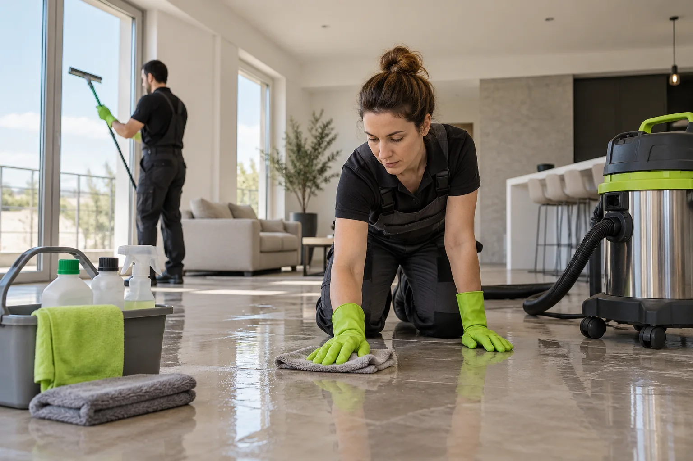

Nettoyer soi-même après un décès : jusqu’où aller ?
Certaines tâches sont à votre portée, d’autres non. Un tri honnête entre ce qui peut se faire en famille et ce qui doit être confié.

En résumé
- Quand le décès a été constaté vite et que rien n’a coulé, une famille peut aérer, trier et ranger seule.
- Dès qu’il y a des fluides, un matelas imprégné ou une odeur installée, le nettoyage devient un travail d’hygiène à confier.
- L’eau de Javel ne suffit pas, et la mélanger à un autre produit dégage des gaz dangereux.
- Le coût moral est souvent plus lourd que le coût matériel : se faire épargner certaines images est légitime.
- Un tri en trois colonnes (je peux, j’hésite, je confie) aide à décider sans culpabilité.
Pourquoi on veut le faire soi-même
Beaucoup de proches souhaitent s’occuper du logement eux-mêmes. Par pudeur, par loyauté envers la personne disparue, pour ne pas laisser des inconnus manipuler ses affaires, ou simplement pour économiser. Ce réflexe est respectable. Il se heurte pourtant à deux obstacles : l’état réel du logement, que l’on ne connaît pas encore, et la charge émotionnelle de ce que l’on risque d’y voir.
L’objectif de cet article n’est pas de vous en dissuader à tout prix, mais de vous donner les critères pour décider au cas par cas. Ils sont sensiblement différents selon qu’il s’agit d’un décès constaté rapidement ou d’un cas plus ancien, traité dans l’article sur le logement après un décès découvert tardivement.
Les situations où vous pouvez vous en charger
Lorsque la personne est décédée à l’hôpital, en maison de retraite ou à domicile mais prise en charge en quelques heures, le logement est généralement intact. Il n’y a pas de fluides à traiter, et les tâches relèvent du rangement et du ménage ordinaire.
- Aérer largement et faire le tour des pièces
- Vider le réfrigérateur et le congélateur, en évacuant les denrées périmées
- Trier les papiers, vêtements et objets personnels avec la famille
- Laver la vaisselle, le linge et les surfaces avec les produits habituels
- Organiser un débarras ou une donation pour le mobilier restant
Dans ce cadre, aucune protection particulière n’est nécessaire, au-delà de gants pour les travaux salissants. Prenez votre temps : le logement n’a pas à être vidé en un week-end, sauf contrainte du bailleur.
Les situations qui dépassent le ménage
Certains signes indiquent que vous êtes face à un travail d’hygiène spécialisé. Dès que l’un d’eux apparaît, il vaut mieux s’arrêter et faire venir une équipe formée.
- Des taches ou des auréoles sur un matelas, un canapé, un tapis ou un sol
- Une odeur forte qui persiste après aération
- Des mouches, des larves ou d’autres insectes dans une pièce
- Un revêtement de sol qui se décolle ou qui semble humide
- Un décès découvert après plusieurs jours, ou survenu dans un contexte de violence
Le simple fait de déplacer un matelas imprégné peut répandre des fluides dans le reste du logement. Les produits ménagers courants n’atteignent pas la matière absorbée en profondeur, et vous exposent à des micro-organismes sans protection adaptée.
Les erreurs les plus fréquentes
La première erreur est de compter sur l’eau de Javel. Utilisée seule, elle est efficace sur des surfaces propres, mais sa réaction avec la matière organique l’épuise vite, si bien qu’elle ne désinfecte pas les zones souillées. Surtout, la mélanger à de l’ammoniaque, à un détartrant ou à un autre produit acide libère des gaz irritants, parfois dangereux : ne combinez jamais deux produits ménagers.
La deuxième erreur est de frotter. Une zone souillée frottée à la brosse ou au jet projette des gouttelettes, étale la contamination et la fait pénétrer dans les joints. La troisième est de mettre les éléments touchés dans les sacs ou la benne ordinaires : ils doivent être emballés hermétiquement et orientés vers la filière adaptée, que la mairie ou la déchetterie peut vous indiquer.
La quatrième est de sous-estimer le temps de séchage. Un support nettoyé mais humide développe des moisissures et ravive l’odeur. Pour comprendre pourquoi l’odeur résiste, voyez notre article odeur de décès : combien de temps dure-t-elle.
Le coût caché : ce que l’on ne chiffre pas
Acheter les protections, les produits et les sacs, louer un déshumidificateur, prendre des jours de congé, faire plusieurs allers-retours en déchetterie : l’addition en temps et en argent dépasse souvent ce que l’on imagine, et elle ne comprend ni le traitement de l’air ni la garantie qu’une odeur ne reviendra pas.
Le coût émotionnel est plus lourd encore. Certaines scènes se gravent, et revenir sur les lieux pour nettoyer ravive le choc. Il n’y a aucune faiblesse à vouloir en être épargné ; des proches qui s’y sont obligés disent souvent qu’ils auraient préféré garder en tête l’image de la personne vivante. Si la douleur est forte, vous pouvez en parler à votre médecin, à un psychologue ou à une association d’aide au deuil ; en cas de détresse, le 3114 répond 24 heures sur 24.
Un compromis qui fonctionne bien
Beaucoup de familles combinent les deux approches. Elles confient à une équipe les zones touchées et le traitement de l’air, puis se réservent ce qui relève de la mémoire : le tri des papiers, des photographies, des vêtements, des souvenirs. Nous pouvons, avant tout nettoyage, mettre à l’abri les objets que vous souhaitez récupérer, les nettoyer à la main et vous les remettre dans une boîte propre.
Ce partage des tâches respecte vos souhaits tout en limitant les risques. Notre page nettoyage après décès décrit comment nous procédons, et la visite est gratuite si vous souhaitez un avis sur ce que vous pouvez faire seul.
Décider si vous nettoyez vous-même ou si vous confiez
Observer sans toucher
Regardez depuis la porte : taches, humidité, insectes, odeur forte ?
Appliquer la règle des trois colonnes
Je peux : rangement, tri, ménage. J’hésite : tout ce qui est taché ou odorant. Je confie : fluides, literie imprégnée, sols atteints.
Demander un avis gratuit
Une visite ou des photos permettent de savoir si le cas est simple.
Fixer ce que vous gardez
Papiers, souvenirs, objets de valeur que vous voulez trier vous-même.
S’entourer
Ne restez pas seul pour le tri des affaires : un proche peut vous accompagner.
Planifier le séchage et l’aération
Prévoir plusieurs jours avant remise en location, vente ou nouvel usage.
Si vous avez besoin d’une intervention
Visite et devis écrit gratuits, tous les jours. Voici les pages qui correspondent à ce sujet.
Faire soi-même : vos questions
Puis-je utiliser de l’eau de Javel pour désinfecter ?
Sur une surface propre, oui, diluée selon l’étiquette. Sur une zone souillée, elle perd son efficacité et ne remplace pas un nettoyage préalable. Ne la mélangez jamais à un autre produit.
Que faire d’un matelas taché ?
L’emballer dans une housse fermée sans le frotter, et se renseigner auprès de la mairie ou de la déchetterie sur la filière à utiliser. Mieux vaut le confier à l’équipe qui nettoie.
Est-ce illégal de nettoyer soi-même ?
Non, aucun texte n’interdit à une famille de nettoyer son logement. Mais si une enquête est ouverte, le logement ne doit pas être nettoyé tant que les lieux ne sont pas officiellement rendus.
Peut-on faire intervenir un professionnel pour une partie seulement ?
Oui, par exemple pour la chambre et le traitement de l’air, pendant que la famille s’occupe du reste. Le devis peut être découpé par zones.
Un appel, un devis gratuit
Dites-nous où se trouve le logement et ce qui s’est passé, en quelques mots. Nous répondons tous les jours.
07 57 83 26 26